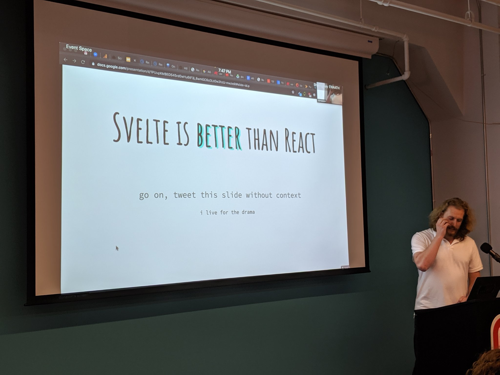
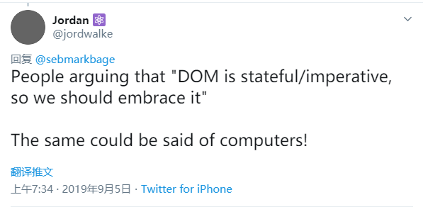
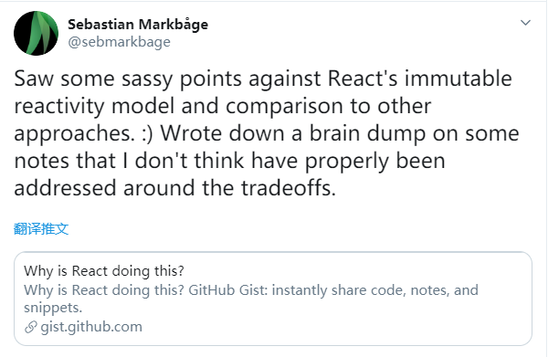
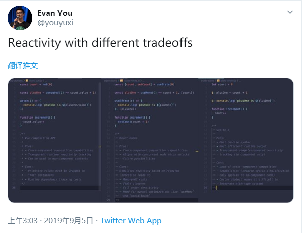
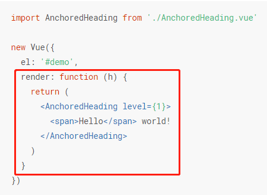
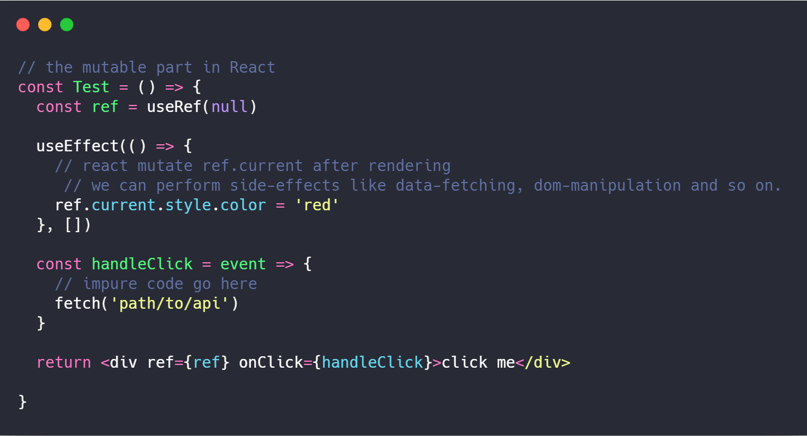
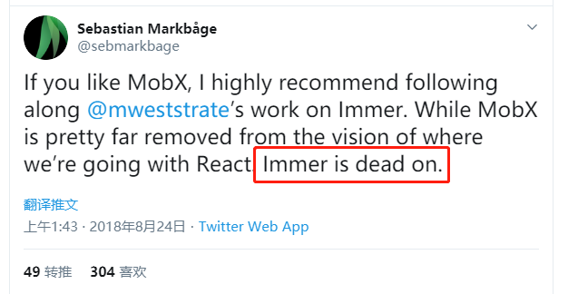
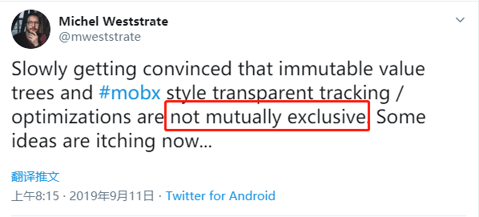
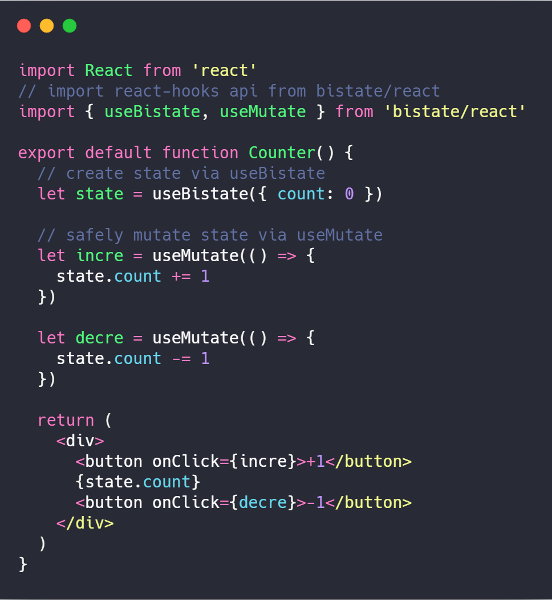

<html>
  <head>
    <meta charset="utf-8" />
    <meta
      name="viewport"
      content="width=device-width, initial-scale=1.0, maximum-scale=1.0, user-scalable=no"
    />

    <title>打破框架的范式之争</title>

    <link rel="stylesheet" href="css/reveal.css" />
    <link rel="stylesheet" href="css/theme/black.css" />

    <!-- Theme used for syntax highlighting of code -->
    <link rel="stylesheet" href="lib/css/zenburn.css" />

    <!-- Printing and PDF exports -->
    <script>
      var link = document.createElement('link')
      link.rel = 'stylesheet'
      link.type = 'text/css'
      link.href = window.location.search.match(/print-pdf/gi)
        ? 'css/print/pdf.css'
        : 'css/print/paper.css'
      document.getElementsByTagName('head')[0].appendChild(link)
    </script>
  </head>

  <body>
    <div class="reveal">
      <div class="slides">
        <section data-markdown>
          <script type="text/template">
            <h2 style="text-transform:none">打破框架的范式之争</h2>
            工业聚@携程
          </script>
        </section>
        <section data-markdown>
          <script type="text/template">
            <h2 style="text-transform:none">A React meetup: useReactNYC</h2>
            
          </script>
        </section>
        <section data-markdown>
          <script type="text/template">
            <h2 style="text-transform:none">A Github meetup</h2>
            <h2 style="text-transform:none">OPEN SOURCE IS NOT A GOOD IDEA</h2>
          </script>
        </section>
        <section data-markdown>
          <script type="text/template">
            <h2 style="text-transform:none">The Problems of React</h2>
            Mismatch between React and Web
            - The React programming model is functional UI
                - UI = f(State)
            - But the web is full of imperative APIs
                - DOM, BOM, JavaScript, CSS
          </script>
        </section>
        <section data-markdown>
          <script type="text/template">
            <h2 style="text-transform:none">The original author of React</h2>
            
          </script>
        </section>
        <section data-markdown>
          <script type="text/template">
            <h2 style="text-transform:none">React core team member</h2>
            
          </script>
        </section>
        <section data-markdown>
          <script type="text/template">
            <h2 style="text-transform:none">Two approaches of Reactivity</h2>
            - mutable + change tracking
            - immutability + referential equality testing
          </script>
        </section>
        <section data-markdown>
          <script type="text/template">
            <h2 style="text-transform:none">The author of Vue</h2>
            
          </script>
        </section>
        <section data-markdown>
          <script type="text/template">
            <h2 style="text-transform:none">框架范式之争</h2>
            - <strong style="color:#ea088a">functional</strong> vs <strong style="color:#ea088a">imperative</strong>
            - <strong style="color:#ea088a">immutable</strong> vs <strong style="color:#ea088a">mutable</strong>
            - <strong style="color:#ea088a">referential equality testing</strong> vs <strong style="color:#ea088a">change tracking</strong>
          </script>
        </section>
        <section data-markdown>
          <script type="text/template">
            <h2 style="text-transform:none">社区中特别的声音</h2>
            <strong style="color:#ea088a">"物理学大厦已经落成，所剩只是一些修饰工作。"</strong>
            - "使用 Vue 就坚定使用 Mutable"
            - "使用 React 就坚定使用 Immutable"
            - "Vue 3.0 已经将 Mutable 发挥到极致"
            - "对于 React 开发者来说，坚持你们 Immutable 信仰吧"
            - "不建议在 JSX 中再实现类似 Mutable + JSX 的花样"
          </script>
        </section>
        <section data-markdown>
          <script type="text/template">
            <h2 style="text-transform:none">Functional UI in Vue</h2>
            Vue has a built-in functional-ui/virtual-dom
            
          </script>
        </section>
        <section data-markdown>
          <script type="text/template">
            <h2 style="text-transform:none">Imperative In React</h2>
            Mutable-Ref and Side-Effects
            
          </script>
        </section>
        <section data-markdown>
          <script type="text/template">
            <h2 style="text-transform:none"><a href="https://github.com/immerjs/immer">Immer</a></h2>
            Create the next immutable state by mutating the current one

            
          </script>
        </section>
        <section data-markdown>
          <script type="text/template">
            <h2 style="text-transform:none">The author of Immer and Mobx</h2>

            
          </script>
        </section>
        <section data-markdown>
          <script type="text/template">
            <h2 style="text-transform:none">One More Thing</h2>
            <a href="https://github.com/Lucifier129/bistate">Bistate</a>: Combined immutable, mutable and reactive mode</a>

            
          </script>
        </section>
        <section data-markdown>
            <script type="text/template">
              <h2 style="text-transform:none">总结：如何打破框架范式之争？</h2>
              <strong style="color:#ea088a">保持开放和包容的心态</strong>
              - JavaScript 是一个多范式语言
              - 不同范式有各自的适用场景
              - 框架作者们致力于发掘某种范式的潜力，不意味着他们否定另一种范式
              - 可以通过编译(Compiler)和元编程(Metaprogramming)等技术，找到不同范式之间的衔接点
            </script>
          </section>
        <section data-markdown>
          <script type="text/template">
            ## Q & A
            关注我的公众号【工业聚】，了解更多前端知识
            
          </script>
        </section>
      </div>
    </div>

    <script src="lib/js/head.min.js"></script>
    <script src="js/reveal.js"></script>

    <script>
      // More info https://github.com/hakimel/reveal.js#configuration
      Reveal.initialize({
        history: true,

        // More info https://github.com/hakimel/reveal.js#dependencies
        dependencies: [
          { src: 'plugin/markdown/marked.js' },
          { src: 'plugin/markdown/markdown.js' },
          { src: 'plugin/notes/notes.js', async: true },
          {
            src: 'plugin/highlight/highlight.js',
            async: true,
            callback: function() {
              hljs.initHighlightingOnLoad()
            }
          }
        ]
      })
    </script>
  </body>
</html>
